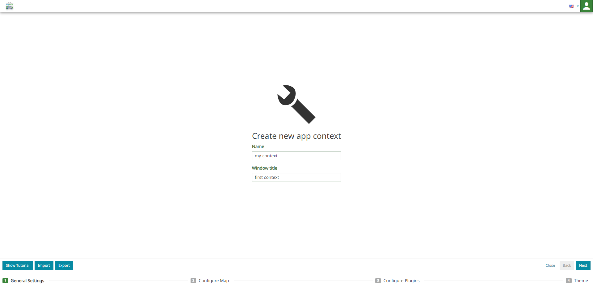
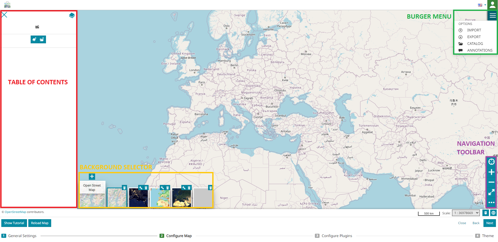
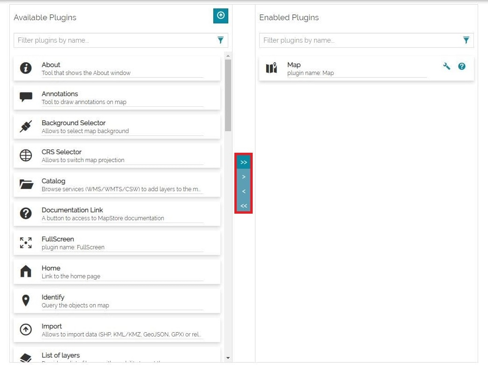
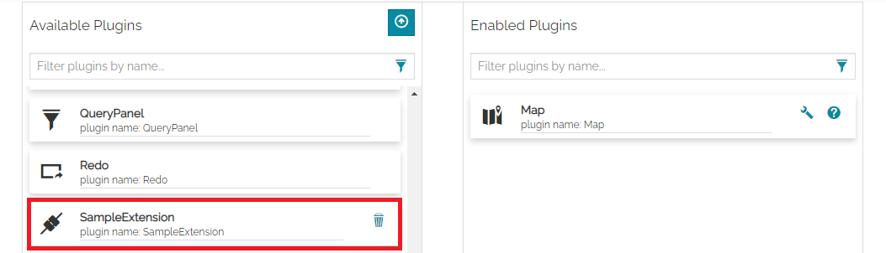
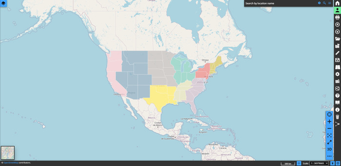

Application Context
In order to create a context, the Admin can click on the New Context button in the Contexts page and he will be addressed directly to a wizard. The wizard is composed by the following four steps:

You can move through the steps of the wizard with the dedicated buttons located at the bottom right of the page.

In this way the admin can:
-
Move forward on the different steps through the Next button
-
Go back to the previous step through the Back button

-
Closed the context wizard through the Close button
General Settings
This first step allows to configure the Name and the Window title of the new context.

Warning
The name and the window title are both mandatory fields. Note that it is not allowed to choose a name that has already been assigned to another MapStore's resource (like maps, dashboards, stories): a warning message appears in this case to notify the user.
Note
The Window title is the name of the browser window.
MapStore allows the user to Import an application context by selecting the button. The import screen appears so that it is possible to drag and drop a previously exported context file there or select it from the local machine through the button.
Once a valid context name is specified in General settings, it is possible to Export the context with all the configurations introduced up to that point; this is possible through the  button. The export screen appears and the user exports the context, in
button. The export screen appears and the user exports the context, in JSON format, by clicking the button.
Note
The button is only available on the first step of the application context wizard (the General settings) while the button is always available with the only condition that a valid context name has been specified.
Configure Map
To create the context viewer, the map configuration like the one described here opens so that the admin can set the initial state of the context map.

In particular the admin can configure the context map using the following MapStore tools:
-
Catalog, present in Burger Menu , to configure the supported remote services (like CSW, TMS, WMS and WMTS) and add layers to the map.
-
Import, present in Burger Menu , to import map files and import vector file.
-
Annotations, present in Burger Menu button, to add annotations to the map.
-
Table of Contents, through the button where the admin can use all the available functionalities to manage context layers.
-
Background Selector, at the bottom left of the viewer, allows the user to add, manage and remove map backgrounds
-
CRS Selector, through the button at the bottom right of the Footer, to switch the Coordinate Reference System of the map
-
The Navigation Toolbar, at the bottom right of the viewer, is useful to the admin to explore the map.
An example of a context viewer with a new background and a layer, added to the map, can be the following:

Configure Plugins
This wizard step allows to select the extensions that will be available in the context viewer: the user of a context will use only the plugins enabled by the administrator. Within this wizard step, all the available plugins in MapStore are present in the left side list ready to be selected for the context . The right side list contains the list of plugins selected by the administrator for the context.

Through the central vertical bar the administrator can select the plugins to include in the context viewer by moving them from the Available Plugins list to the Enabled Plugins list.

In particular, the admin can:
- Add an extension from the Available Plugins list to the Enabled Plugins list, using the Add Extension button . Instead, remove an extension from the Enabled Plugins list using the Remove Extension button , as follows:
- Bring all extensions from one list to another using the Add all extensions button
 or remove all extensions using the Remove all extensions button , as follows:
or remove all extensions using the Remove all extensions button , as follows:
To search for an extension listed, the admin can use the Search bar.
Add extensions to MapStore
The MapStore administrator can also install a custom plugin by using the Add extension to MapStore button  , at the top right of the Available Plugins list.
, at the top right of the Available Plugins list.
Here the admin, in order to upload the plugin's package, can drag and drop it inside the import screen or select it from the folders of the local machine through the button.
Warning
A plugins package must be provided as .zip archives that contains:
-
An
index.jsonfile with a plugin definition -
A plugin file with the extension code in
JavaScript -
All mandatory translations files in MapStore.
A sample extension for testing purposes is available here. More extensions will be available in the future versions of MapStore.
Through the Add button  the plugin is inserted in the Available Plugins list.
the plugin is inserted in the Available Plugins list.

A plugin so installed can be included in the context viewer by moving it in the Enabled Plugins list or uninstalled through the Delete button  .
.

Optional tools for enabled plugins
In the Enabled Plugins list, the following buttons are displayed for each extension:
- The Enable selection of current plugin for user button allows the admin to configure which extensions will be present in the Extension Library and not activated by default.
Note
Once a plugin has been included in a context, it is active by default and available inside the viewer. The administrator can click on Enable loading this plugin on startup button  to make that plugin not active by default: clicking on this button the plugin will not be available in the context viewer until explicitly activated by the end user through the Extension Library.
to make that plugin not active by default: clicking on this button the plugin will not be available in the context viewer until explicitly activated by the end user through the Extension Library.
- The Edit Plugin Configuration button allows the admin to interact with a text area to specify the plugin configuration and to override the default one.
- The Open plugin configuration documentation button
 opens the Plugins Documentation in another page.
opens the Plugins Documentation in another page.
How to update extensions
Extension can be updated using two steps:
-
Old extension removal.
-
Uploading and installation of the new version of extension.
As previously stated, extension can be removed on "Configure Plugins" step of wizard using Delete button .
At this point extension will be removed from application completely. Save context after extension removal only if you want to be sure that extension will not be activated for the context if it's reinstalled at some point.
Do not save context and upload new version of extension right away after old version removal. Context don't need to be saved after new version installation.
With all stated above, complete workflow is:
-
Open context editing and jump to the "Configure Plugins" step of the wizard.
-
Delete old version of extension using Delete button
. -
Upload and install new version of extension using the Add extension to MapStore button
-
Do not save context, close wizard.
Existing configuration of extension (default or customized) will be preserved for all the contexts using extension.
Configure Theme
The last wizard steps allows to configure the theme to use for a context. A dropdown allows to select one of the available themes (see the Styling and Theming section of the online documentation to know how to create and include additional themes to MapStore). By default in MapStore a default and a dark themes are available.
Default Theme
The default theme is always available for a context and it is the MapStore default one. This theme is automatically applied to the context if the Configure Theme wizard step is skipped during the context creation or when the theme selection drop-down is cleared. An example of a default context can be the following:
Dark Theme
MapStore also provides by default an additional theme, the dark one, that can be selected from the drop-down menu to be used as an alternative theme for application contexts.

An example of the dark theme applied to a context is the following one:

Custom Theme
After selecting a theme from the drop-down, it is also possible to customize it from UI by enabling Custom Variables.

Once Custom Variables is enabled, the context editor can modify main, primary and secondary colors for both backgrounds and texts (an helper clarifies the UI elements involved for each field in the form). Clicking on the Change Color button a color picker is displayed to allow the selection of the desire color, as follows:
The colors that can be customized are the following ones:
-
Main Text Color to choose the color used in panel or dialog texts
-
Main Background Color to choose the color used in panel or dialog backgrounds
-
Primary Text Color to choose the color used for icons inside toolbar, header and button texts
-
Primary Color to choose the color used for icons inside toolbar, header and button backgrounds
-
Secondary Text Color to choose the color used as button text when a button is active or selected
-
Secondary Color to choose the color used as button background when a button is active or selected
Warning
To ensure a good and well readable color contrast between each UI component, make sure to not use a secondary color too similar to the primary one and obviously the primary text color with its counterpart (the same applies for the other couples of colors: main, secondary).
An example of a custom context can be the following: